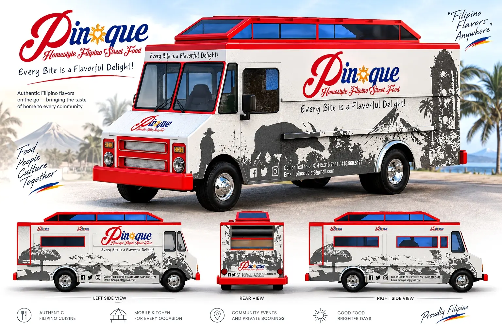
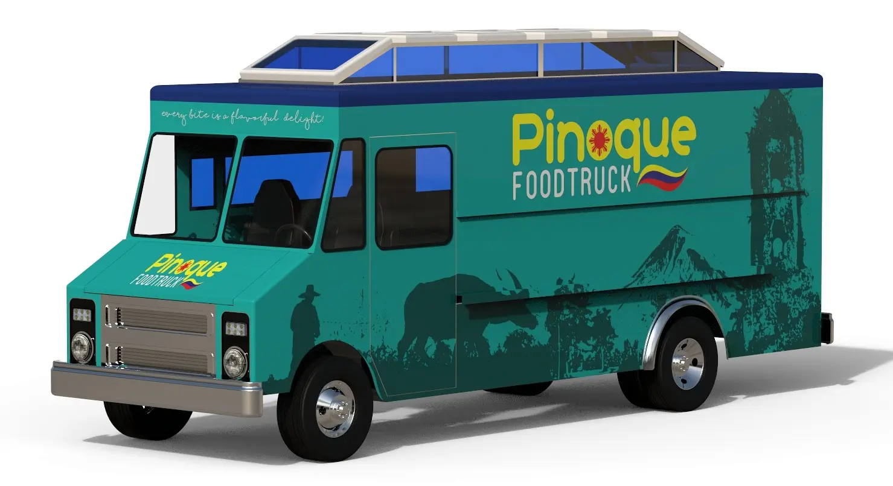
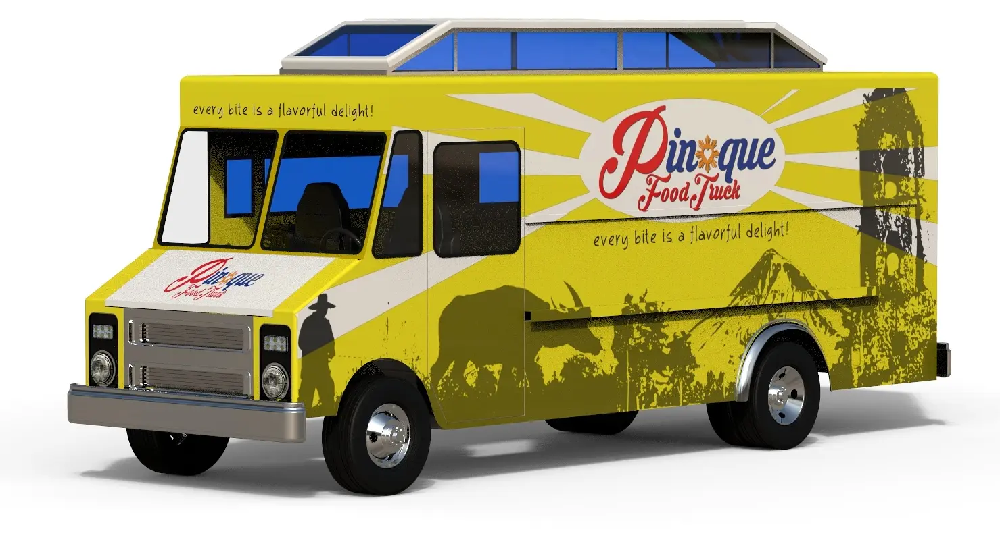

CALIFORNIA · CONSIGNED CONCEPT · c. 2023
Pinoq
Street Food Van
An existing van reimagined through Filipino-inspired illustration, cultural silhouettes and confident red-and-blue accents.

DESIGN RESPONSE
The clean white base gives the illustrated identity a welcoming presence while allowing the Filipino-inspired artwork and service-side graphics to remain readable from a distance.

